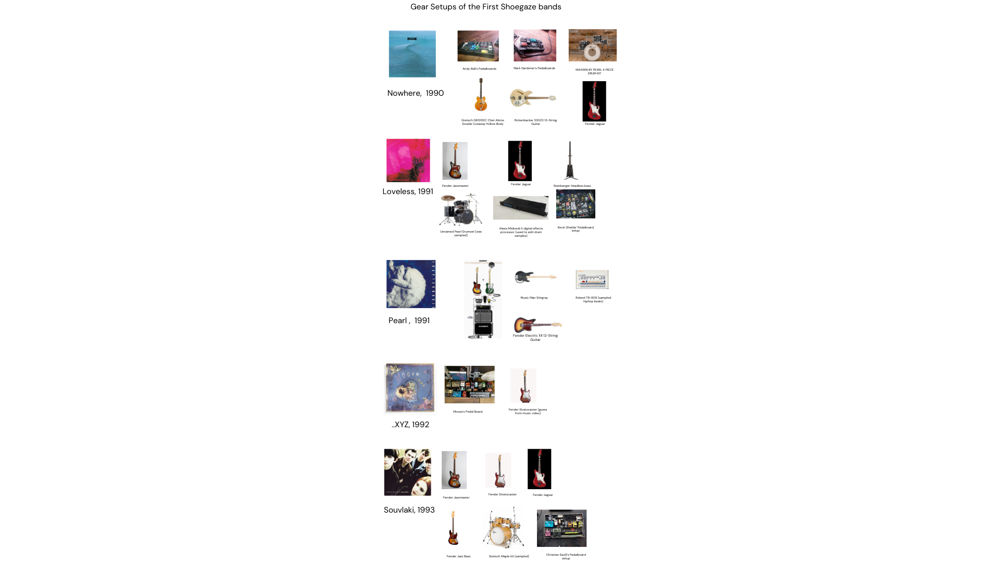
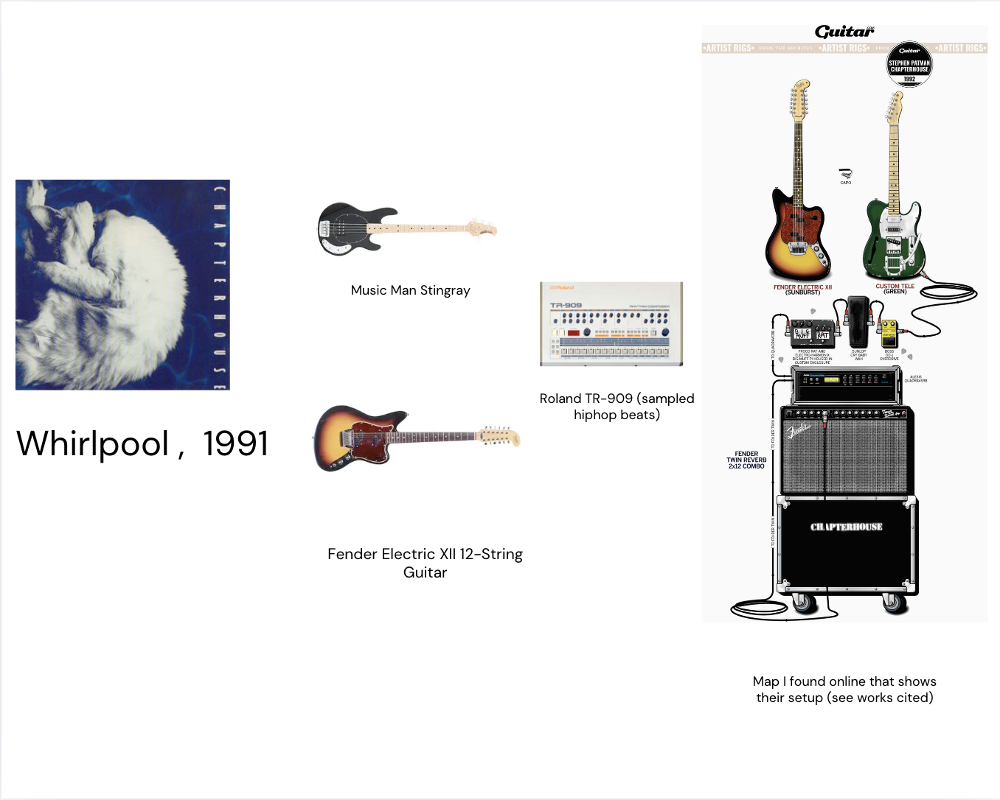
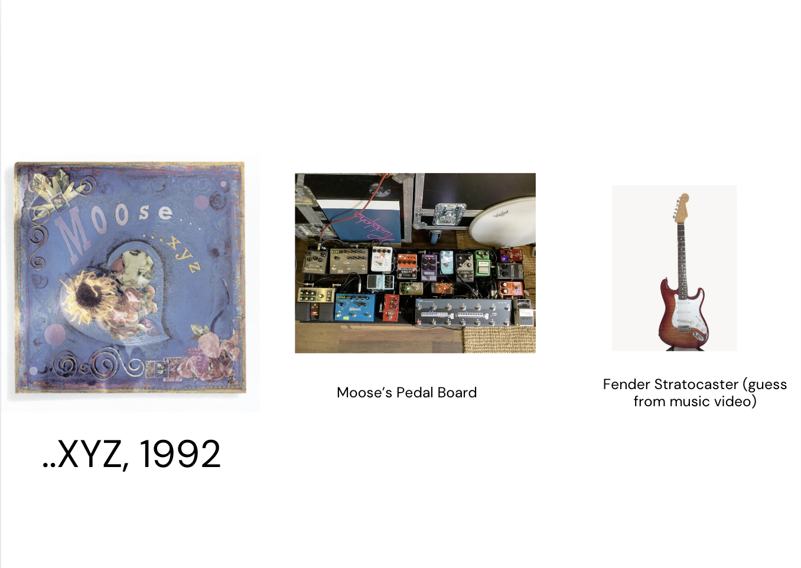
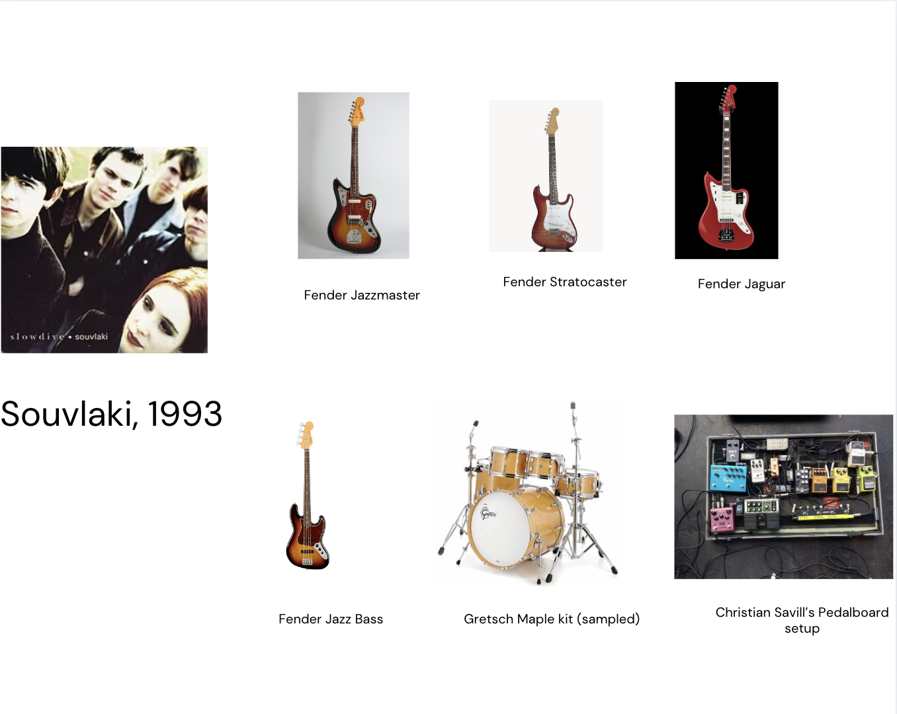

Shoegaze Gear Map
On the opposite side of the spectrum, shoegaze was more about instrumentation.
That is to not say there was not any emotional songs or songs about the current day,
however, they were not the driving force of the genre. The music and instruments were.
Scroll down to see the large map and then each individual mini map!

Nowhere - Ride 1990
>
Loveless - my bloody valentine 1991
Whirpool - Chapterhouse 1991

...XYZ - Moose 1992

Souvlaki - Slowdive 1993

Works Cited
Loveless: